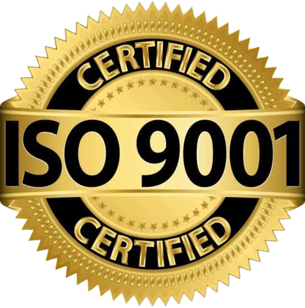
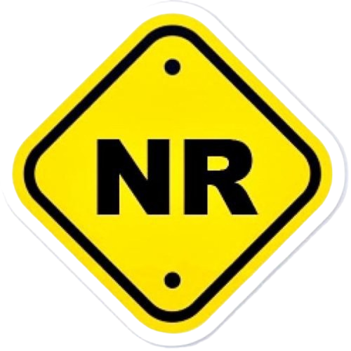
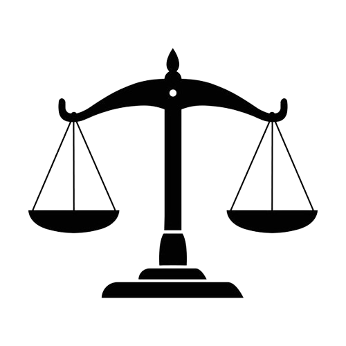
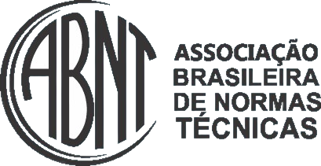

O manual do funcionário é um documento essencial que contém informações importantes sobre as políticas, procedimentos e cultura da empresa. Ele é projetado para ajudar os funcionários a entenderem melhor suas responsabilidades, os benefícios oferecidos e as expectativas da empresa.
Além disso, o manual serve como um guia para os funcionários novos e antigos, fornecendo respostas para perguntas frequentes e esclarecendo dúvidas sobre o funcionamento interno da organização.
Ter um manual do funcionário bem elaborado é fundamental para garantir uma comunicação clara e eficiente dentro da empresa. Ele também ajuda a alinhar os objetivos dos funcionários com os objetivos da empresa, promovendo um ambiente de trabalho mais harmonioso e produtivo.
Baseado na empresa Gerdau :
VISÃO
MISSÃO
VALORES
Segurança
Sustentabilidade
Excelência
Foco no Cliente
Pessoas
Transparência Ética
Ser a líder em aciaria sustentável, atendendo com excelência às necessidades dos nossos clientes e criando valor para todos os nossos públicos de interesse
Desenvolver soluções de aço que contribuem para a construção de um futuro mais sustentável, inovador e próspero, promovendo o crescimento das pessoas e das comunidades onde atuamos
Manual do Funcionário: Diretrizes e Políticas
Este objetivo visa abordar as desigualdades de gênero em todas as suas formas. Incluindo aquelas relacionadas ao acesso à educação, saúde, emprego e participação política.
Promove o crescimento econômico sustentado inclusivo e sustentável, emprego pleno e produtivo e trabalho decente para todos.
Foca na construção de infraestruturas resilientes, na promoção da industrialização inclusiva e sustentável e no fomento à inovação.
Visa reduzir as desigualdades dentro dos países entre eles, promovendo a inclusão social, econômica e política de todos.
Promove padrões de consumo e produção sustentáveis. Visando reduzir pela metade o desperdício de alimentos per capita globalmente e reduzir a geração de resíduos.
Visa tomar medidas urgentes para combater a mudança climática e seus impactos. Integrando medidas nas políticas, estratégias e planejamentos nacionais.
Promove sociedades pacíficas e inclusivas, proporcionando o acesso à justiça para todos construindo instituições eficazes, responsáveis e inclusivas em todos os níveis.
Visa fortalecer os meios de implementação e revitalizar a parceria global para o desenvolvimento sustentável. As metas incluem mobilizar recursos financeiros para o desenvolvimento sustentável, facilitar o acesso a tecnologias e inovações.

Uma norma internacional que estabelece requisitos para um sistema de gestão da qualidade(SGQ) em uma organização.
Norma internacional que estabelece requisitos para um sistema de gestão ambiental (SGA) em uma organização.
Uma norma internacional que visa estabelecer requisitos para um sistema de gestão da segurança. Saúde ocupacional (SSO) em uma organização.
O selo Empresa Verde identifica organizações que adotam práticas sustentáveis e ambientalmente responsáveis.

As Normas Regulamentadoras são um conjunto de diretrizes estabelecidas pelo Ministério do Trabalho e
emprego no Brasil. Elas abordam aspectos como segurança do trabalho, medicina ocupacional, ergonomia, proteção contra incêndios.

Um Código de Conduta é um conjunto de diretrizes que estabelece as expectativas de comportamento e éticapara. Ele define os padrões de conduta aceitáveis e descreve as responsabilidades e obrigações dos indivíduos dentro dessa estrutura.

Entidade que cria regras para garantir qualidade, segurança e compatibilidade de produtos e processos em diferentes setores no Brasil.


.png)
.png)